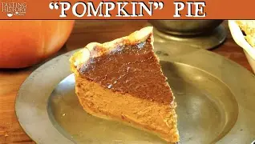

My Recipe of Pumpkin Pie
Introduction
Pumpkin pie is a traditional North American dessert. In the 17th century, the European immigrants
used their traditional way to cook pumpkins---Baking. It is a symbol of harvest time, the immigrants
cooked it to show happiness and pumpkin pie is generally eaten during the fall and early winter. In the
United States and Canada it is usually prepared for Thanksgiving, and Christmas.

Ingredients
Dough
- 1/4 cups all purpose flour
- 2 teaspoons sugar
- 1/8 teaspoon salt
- 1/2 cup cold butter (1 stick), diced
- 1 large egg, lightly beaten
- Flour for rolling the dough
Filling
- One 15-ounce can unsweetened pure pumpkin puree (about 2 cups)
- 3/4 cup packed light brown sugar
- 3 eggs, lightly beaten
- 1 1/4 cups half-and-half
- 1 1/2 teaspoons ground cinnamon
- 1/2 teaspoon salt
- 1/2 teaspoon ground ginger
- 1/2 teaspoon ground allspice
- 1/4 teaspoon freshly ground nutmeg

Instruction
- the dough by hand. In a medium bowl, whisk together the flour, sugar, salt and butter together.
- Make the dough in a food processor. With the machine fitted with the metal blade, pulse the flour, sugar, and salt until combined.
- Form the dough into a disk, wrap with plastic wrap, and refrigerate until thoroughly chilled.
- On a lightly floured surface, roll the dough.
- Set separate racks in the center and lower third of oven and preheat to 400 degrees.
- Lower the oven temperature to 350 degrees F.
- While the pie shell is cooling make the filling.
- Bake on the lower oven rack until the edges of the filling are set but the center is still slightly loose, about 50 to 60 minutes.
At Last
If you want to view more about the pumpkin pie, view this website